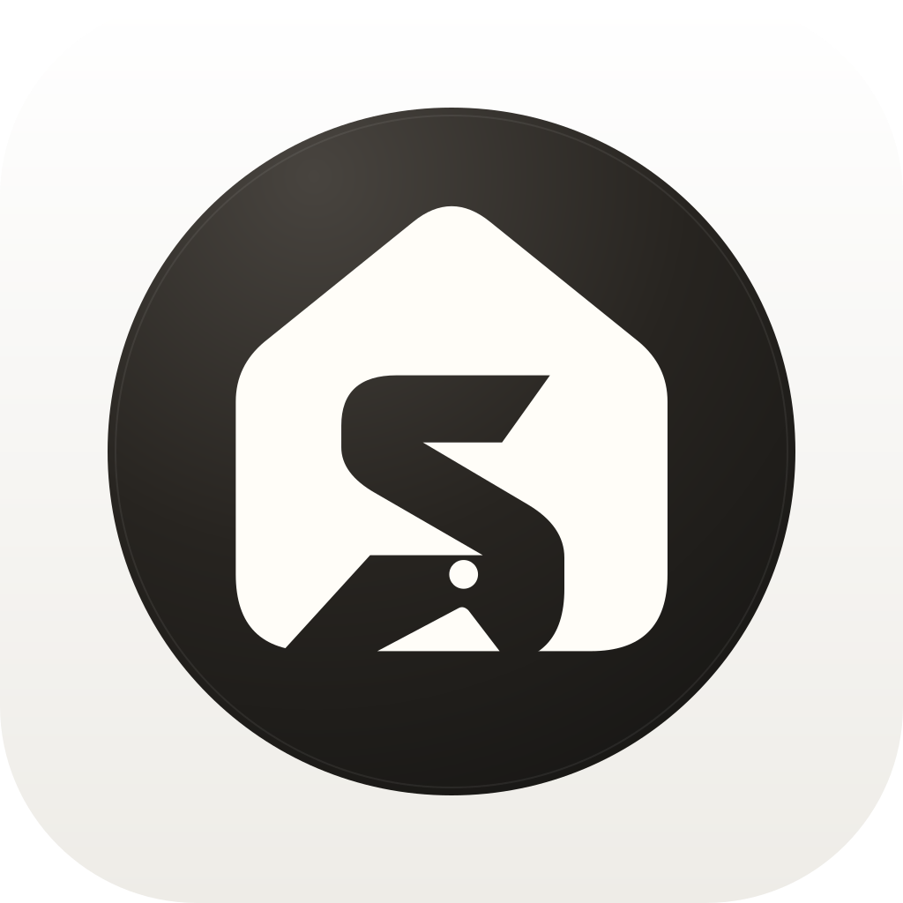

Presence through simplicity.
The enclosure, taper, and point inspired this study. Our home-and-S geometry remains the identity. Flow offers a leaner finish without the point.
A softer home silhouette, a clear hidden S, and a small beacon at its base. A study in the simple, sculptural presence of your SleekPoint reference.

Warm white. Charcoal. A restrained sculptural finish.The enclosure, taper, and point inspired this study. Our home-and-S geometry remains the identity. Flow offers a leaner finish without the point.
Proposed display lockup.
24 · 40 · 64 px
The beacon is a secondary detail at small sizes.